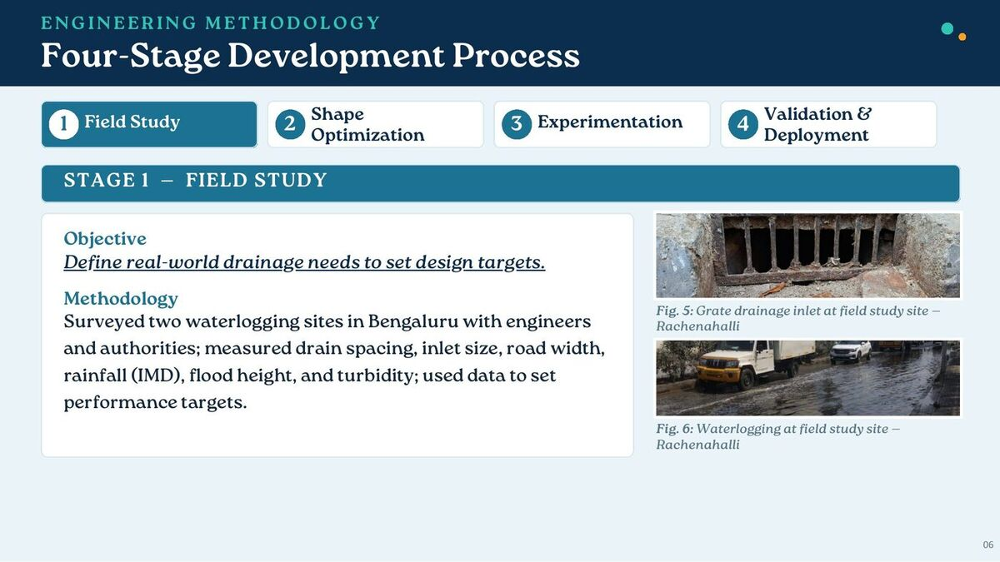
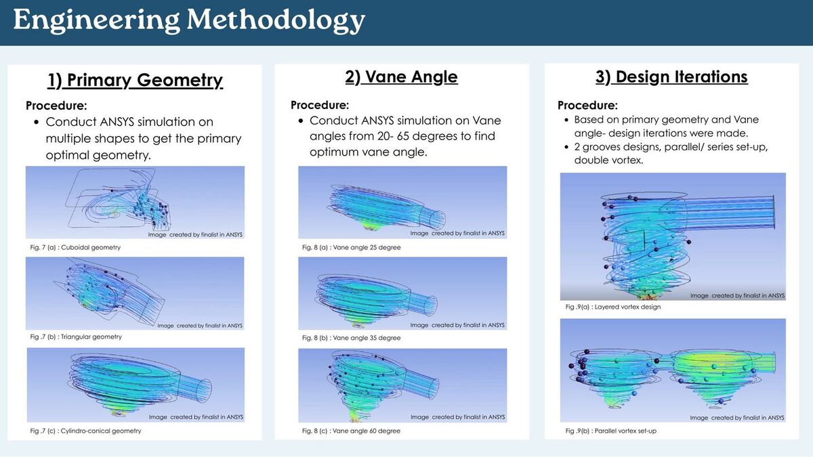
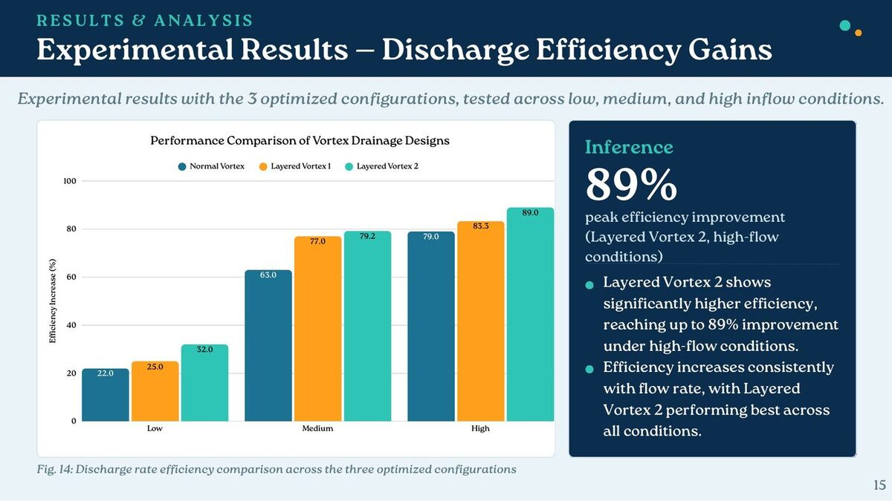
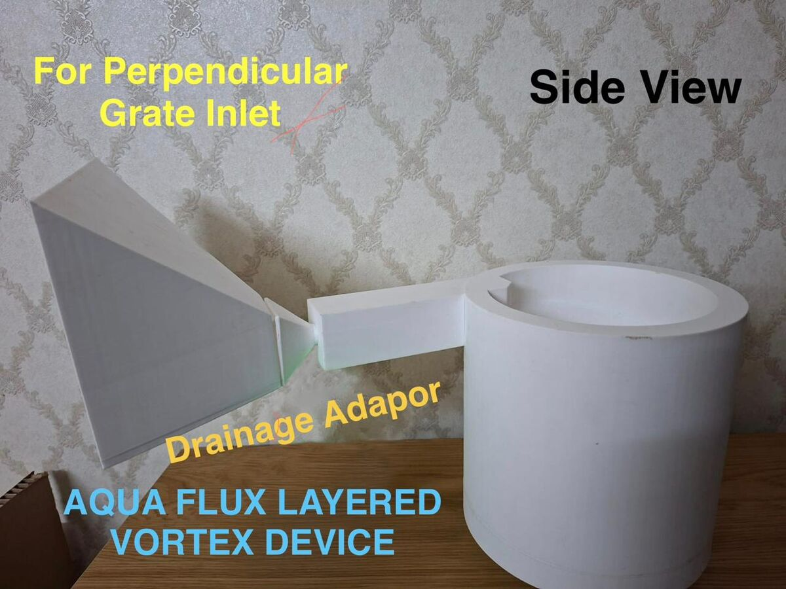

AquaFlux
On a bus ride home, I watched rainwater pool around a drain even though the outlet was directly underneath it. That became the starting question for AquaFlux: if water has somewhere to go, why can’t the inlet capture it fast enough?
 A waterlogged road: the everyday problem that made me look more closely at drainage inlets. | The ideaAquaFlux is a passive, vortex-driven drainage insert that fits into existing surface drain inlets. Instead of adding power or moving parts, I focused on geometry: a stable vortex creates pressure and velocity gradients that pull water in faster, while the swirling flow helps resist debris buildup. I wanted it to be retrofittable without changing existing plumbing infrastructure and simple enough to make as one moulded part from recycled plastic. |
 My four-stage process began with field studies of drainage inlets and waterlogging. | Starting in the fieldI worked with municipal engineers at two waterlogging sites in my city. I measured rainfall intensity, flood depth, inlet discharge, and catchment area per drain to define what the device had to do in a real street, not just in a model. |
 ANSYS comparisons of primary geometry, vane angle, and design iterations. | Making the shape do the workUsing ANSYS simulations and mathematical modelling, I compared more than 30 geometries. I chose a cylindro-conical base geometry, explored vane angles from 20° to 65°, and tried groove layers and parallel setups. Each version was a way to ask whether the vortex would be more stable and the discharge would improve. |
 A 3D-printed parallel vortex version used for experimentation. | Printing and testingI 3D-printed the optimized designs and tested them under varying rainfall intensities and turbidity levels. The tests compared inlet and outlet flow and helped me see which configurations kept improving as flow increased. The results showed a 22% to 89% increase in discharge rate, exceeding the 15% efficiency benchmark in the project brief. |
 The test results compare discharge-efficiency gains across the three optimized configurations. | Validation and deploymentThe government authority certified AquaFlux for deployment at both study sites during the monsoon, with the adapted device and coupler ready for installation. The device can also use recycled plastic: the project estimates 120 kg of waste plastic per mile of road. Working-prototype video |
 A version adapted to a perpendicular grate inlet. | Adapting the insertDifferent inlets need different shapes, so I also built a surface-drainage algorithm that recommends an insert configuration from entered road conditions. The hardware and the calculation are both attempts to make the idea adaptable instead of one fixed drain shape. |